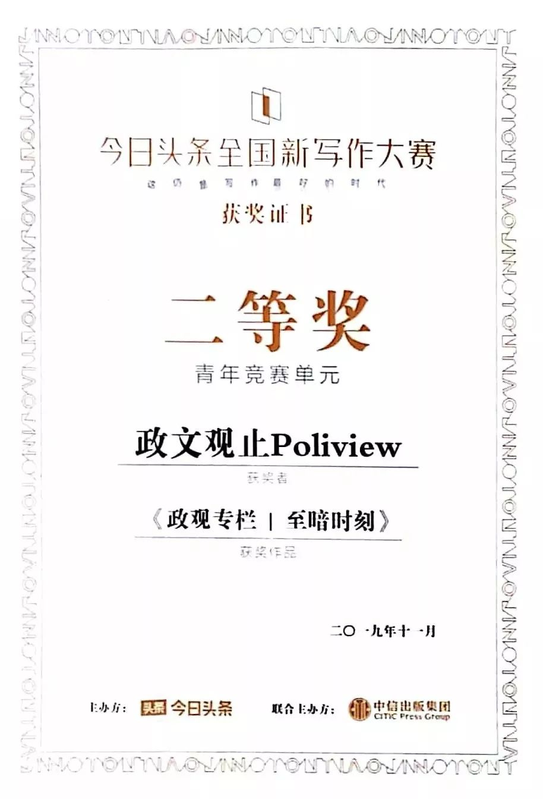
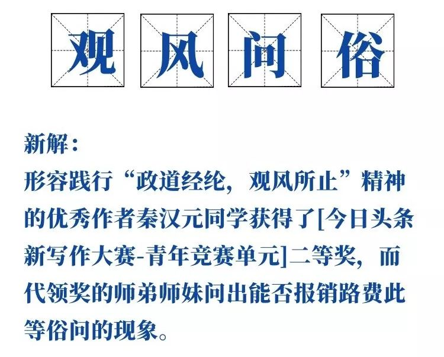

收录于合集

“丘吉尔降生到这个世界上时，他的摇篮旁堆满了天使带来的上天赐予的礼物：想象力、雄辩、勤奋、能力等等。然而又来了一位天使，她说：‘一个人不应该拥有那么多礼物。’然后就把丘吉尔拎起来使劲摇晃，把上天赐予的判断力和智慧这两件礼物晃没了。”——英国保守党领袖，前首相斯坦利·鲍德温（Stanley Baldwin）。
拜相
南宋人王清照在志怪笔记《投辖录》中记载了靖康之变前的一个预言故事，华严经中的龙主鸠盘荼王在东京化身客商，预言了胡骑犯阙，天子北狩，乱世板荡的末日图景。而二战前的丘吉尔也作为孤身前行的先知和《圣经》里被弃置荒野的预言家，利用他的演说与写作才能对纳粹德国的危险性作着持续不懈的预警。他始终倡导着英法苏大同盟的政策，是保守党中少有的绥靖政策反对者。当最终势无可挽的走向战争时，就在1939年9月3日英国对德宣战的同日，丘吉尔重回内阁接掌海军大臣。半年多的文恬武嬉自我麻痹后，1940年5月10日拂晓，达摩克里斯之剑终于落下。德军以雷霆万钧之势长驱直入比利时，英法盟军猝不及防。早在1940年4月，希特勒入侵丹麦挪威并击溃英军，曾反复敦促英军在北欧先发制人的丘吉尔虽然承担了主要责任，但一直以为高枕无忧的张伯伦却付出了政治代价。反对派坚持不与张伯伦在战时内阁共事，于是就出现了电影开头议会下院的嘘声与斥责。
到5月24日，随着盟军最后的反攻失利，在德军钳形攻势下，盟军绵亘于法德比边境直至海峡的常山蛇势被斩断，德军挟欧陆不败之势围加莱，克布伦，将全部的英国远征军与部分法军34万人压在敦刻尔克。就在这天，希特勒视察了龙德施泰德的A集团军总部，该集团军前部兵锋已距敦刻尔克南郊不足15英里。
也正是在德军西线攻势开始的5月10日，丘吉尔奉命于危难之间，履新首相。纵观整个30年代，由于丘吉尔早期政治生涯朝秦暮楚（在保守党自由党之间反复），由保守党主导的历届联合政府都认为丘吉尔不足为恃。而他的政治生涯也不算光彩，一战任海军大臣而折戟加里波利，战后为财政大臣而粗疏不慎，大位危机时却支持爱德华八世……当时的首相热门人选，除了丘吉尔，还有张伯伦与乔治六世一致认可的外交大臣哈利法克斯。作为热衷猎狐运动的老派贵族和前任印度总督，哈利法克斯一直是张伯伦内阁的“绥靖号大副“。或许并不是因为身为上院议员需要挪动议席到下院才能接任首相，而是因为看到张伯伦下台时的狼狈而担忧公众的不信任，国际局势危如累卵断难收拾，他主动选择了让贤。
然而在5月13日丘吉尔第一次出席下院会议，并发表经典的“热血、辛劳、眼泪和汗水奉献给大家”演说时，保守党依然把掌声送给了卸任的张伯伦。意识到阻力重重，地位脆弱，丘吉尔在战时内阁中挽留了保守党党魁张伯伦任枢密院议长，包容了政见不同的哈利法克斯仍为外交大臣负责周旋折冲，接纳了工党的艾德礼与格林伍德。张伯伦后来在日记里写道，丘吉尔白纸黑字地写给他一句这样话：我的未来需要仰仗您。
帷幄
丘吉尔履新时，远征军孤悬海外势如累卵，法兰西国运垂危方寸大乱。虽然丘吉尔在5月16日同法国总理雷诺会晤时坚称绝不屈服，但英军战斗机指挥部司令道丁已经建议不要将飞机派往已成败局的法国战场。即将赴任驻西班牙大使的前张伯伦阁员霍尔也认为远征军必然尽殁于欧陆，总参谋长艾恩塞德担心欧陆兵败如山倒则英帝国有终结之危。对于海峡对岸的孤军，艾恩塞德将军在日记中承认，他看不到远征军全身而退的任何可能。前线指挥官戈特勋爵则和军方高层一致估计，全军最多也只能撤出45000人。此时德国如果泛海来攻，则本土形如不设防空城。电影的细节也十分恰当的反应了当时美国的态度，罗斯福的同情是真诚的，但却没有任何实质性承诺。在敦刻尔克撤退开始前后，美国总统还考虑通过施压英国的自治领加拿大，来说服丘吉尔将英国舰队撤往美洲。
在最黑暗的几天中，英法短暂地考虑了借助意大利对德媾和的可能。丘吉尔和哈利法克斯都没有在回忆录中提到此议。慎重考虑后，丘吉尔在回忆录初稿中删去了“哈利法克斯倾向于对‘最危险的敌人’妥协”的段落，仅仅留下了“对于我们应该单独战斗下去的问题，战时内阁从未有过怀疑动摇，而国内所有党派的政治家，也都对此深信不疑。”孤军奋战傲然不屈的身影被塑造成了公认的形象，直到30多年后档案解密，曾经酝酿但最终夭折的媾和计划才公诸于众。
最先动议的是法国前总理、现任国防部长达拉第。他建议通过美国转告墨索里尼，以一定补偿来换取意大利至少保持中立的地位。英国外交部在5月25日对此表示赞同。而在五天前，亲法西斯的菲利莫尔勋爵已经通过私下渠道会晤了意大利驻英大使巴斯蒂亚尼尼，打开了借助意大利试探对德媾和的渠道。对于外交部的动议，丘吉尔也并不反对，只是要求秘密进行接触。因为就在海峡对岸，25日的战况急剧恶化，英军且战且退在敦刻尔克陷入重围，撤退希望渺茫。外交部国务秘书卡多甘写道：每过一天，撤退的希望就减弱一分。虽然25日是不安排外交会晤的周末，但局势危急，哈利法克斯就在下午会晤并试探了巴斯蒂亚尼尼。意大利大使向国内带去了“英国政府不排除在合适时机讨论解决广泛欧洲问题”的口信，而哈利法克斯则在26日内阁会议上汇报了墨索里尼希望保证欧洲和平的“愿望”。这位外交大臣认为，当前局势下不能侈谈全面击败德国，而应该务实的讨论保障英国独立的问题。丘吉尔则表示，他反对“任何可能有损我国权力与利益的谈判”，但没有否定谈判的可能性。
26日的伦敦连续召开了三次战时内阁会议，而在海峡对岸的欧陆，比利时国王利奥波德已经准备投降。法军总司令魏刚声称，他只有50个师来对抗150个德国师，他将在必要时奉命死战，但对大局于事无补。英国驻法军事代表，丘吉尔的个人特使斯皮尔斯也带回消息，说法国内部已有人开始酝酿投降。法国总统雷诺将法国驻意大利大使庞赛的建议传达给了英国战时内阁。苛刻的条件让主和的哈利法克斯都吃惊不已，意大利在地中海的胃口之大令人咋舌。但哈利法克斯还是选择保留通过意大利寻求和平的窗口。不过事已至此，连战时内阁中曾经的主导绥靖政策的张伯伦都感到难以接受。张伯伦在日记中写道，与其和法国人联合行动，不如英国自主行事，让德国相信英国不可战胜。“被法国人政策绑架的谈判没有开始就注定失败”。
克难 ****
战时内阁此时的观点泾渭分明。张伯伦在讨论中发言支持哈利法克斯，但也同意丘吉尔坚持战斗的要求。持调和立场的他渐渐发觉内阁中沉默的工党党魁艾德礼支持丘吉尔，而格林伍德则认为墨索里尼贪得无厌，英意协商会以失败告终。丘吉尔虽然反感墨索里尼，不同意请求意大利斡旋，但也没有关闭和谈大门。出于团结考虑，他不想公然对抗哈利法克斯。
事情的转折发生在5月27日的会议上。海峡对岸军情如火，内阁会议也在冗长的讨论中白热化。对抗依旧，张伯伦还在和稀泥，却开始倾向丘吉尔。得到大部分阁员支持的丘吉尔态度开始强硬。首相认为不能被法国人拖下水，明知无用的和谈应当终止，不能为了讨好猪一样的队友而硬着头皮继续坚持。即便最坏的情况发生，大英帝国为拯救被纳粹暴政戕害的国家为奋战至最后一息，也虽败犹荣。哈利法克斯与首相最终兵戎相见。政见不合的两人个性也势如水火，哈利法克斯不能接受丘吉尔宁可坚持抗战玉石俱焚，也不考虑任何可能的和平协定的态度。哈利法克斯并不是一个传统看法里一味妥协，只懂得屈膝求和的人。他与主战派的核心分歧，在于达成英国独立这一目标的具体手段。他不希望更大的牺牲毁灭国家，重演一战时一代青年人血洒佛兰德斯的惨剧，由此不能接受丘吉尔执意主战而不考虑其他选择的做法。但正如丘吉尔所说，即便媾和得到德意同意，付出的代价之高也将动摇英国的强国地位。对于一个锋芒正盛的对手，可以肆无忌惮地对失败者予取予求。英国无论如何也不能带着帝国的荣光沉沦到一个强权仆从的无足轻重位置，任人宰割，而应当誓死抗敌，宁为玉碎，不为瓦全。私下里，张伯伦也认为盲目追随法国对德媾和的做法是“进退失据”的，并不可取。
内阁的唇枪舌剑尚未停歇，比利时就宣布了正式投降。敦刻尔克孤军的侧翼洞开，完全暴露给了虎视眈眈的德军。在德军节节胜利的情况下，意大利的态度也开始强硬，齐亚诺拒绝了美国的调停建议。收拾残局的战果看起来十分诱人，意大利果断关闭了与盟国的试探大门。张伯伦尽管将继续战斗作为以后和谈的筹码，但也与哈利法克斯渐行渐远，分道扬镳。他的立场趋向主战派，不再模棱两可。这对于丘吉尔来说至关重要。丘吉尔最终依靠口才与逻辑，说服了反对者。
利用5月28日内阁会议在晚上六点一刻宣布休会的45分钟，丘吉尔对内阁核心外的政府成员发表演说。雄辩发挥了作用，尽管大约25位在座的听众并不参与机要，但局势紧张的气氛已经感染了很多人。丘吉尔利用了这种氛围，成功激发了他们主战的情绪。他在结尾宣称，无论敦刻尔克结局如何，英国都将奋战到底，却巧妙了避开了28日敦刻尔克不容乐观的情况（仅有17000人在当日撤退），客观上达到了争取支持的效果。最终，拒绝媾和坚持抵抗的决议被内阁会议确定。
在6月4日敦刻尔克大撤退完成时，丘吉尔坚强不屈的战时领袖形象完全被塑造了出来，获得了远超同僚的政治威望。事实上，如果在最羸弱的时候屈膝求和，德国人很可能会向丘吉尔估计的一样，很难以公平条件对待命悬一线的对手。希特勒很大概率上会要求剥夺英国海军、海外基地，彻底解除英国武装。另外，一旦公众知道政府在强敌压力下倾向于缔结城下之盟，对于英国国内的士气损失将更为致命，并且会大大削弱英国在自治领心目中的地位。上述成本不是损失直布罗陀或者马耳他这些属地可比的。其实也只有坚持战斗，才能赢得美国的尊重和以后的信任，把握住潜在的盟友，避免国际信誉的进一步透支。正如丘吉尔所说，一个战斗不屈的民族哪怕被优势敌人压垮，也终将重获新生，但懦弱屈服的民族将万劫不复。
作者：秦汉元
编辑：郭静远
